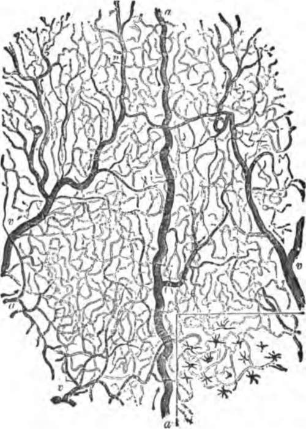
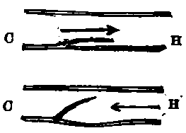

The Veins
Description
This section is from the book "The Human Body: An Elementary Text-Book Of Anatomy, Physiology, And Hygiene", by H. Newell Martin. Also available from Amazon: The Human Body.
The Veins
The first veins arise from the capillary networks in various organs, and like the last arteries are very small. They soon increase in size by union, and so form larger and larger trunks alongside the main artery of the part, but there are many more large veins just beneath the skin than there are large arteries. This is especially the case in the limbs, the main veins of which are superficial, and can in many persons be seen as faint blue lines through the skin.
Why The Large Arteries Usually Lie Deep
The heart pumps the blood with great force into the arteries, and if an artery is cut very rapid and dangerous bleeding occurs; the veins, if cut, do not bleed nearly so violently as an artery of the same size. Hence it is less dangerous to have a large vein than a large artery close under the skin.
Point out a fact illustrating the closeness of the capillaries In many parts of the body. What does the blood do as it flows through the capillaries?
Where do the first veins arise? What is their size? How do they increase in size? Where do the larger veins lie? In what parts of the body do we especially find large veins close beneath the skin?
Why are the large arteries, as a rule, placed deeper than veins of corresponding size?
The Valves Of The Veins
Except the pulmonary artery and the aorta, which have the semilunar valves, arteries have no valves. Most veins, on the contrary, contain many valves formed by pouches of their lining, which resemble in form the semilunar valves of the aorta and the pulmonary artery, but are turned in the opposite direction, having the edge nearest the heart free and the other fixed. These valves permit blood to flow only towards the heart, for a current in that direction, as in the upper diagram, Fig. 62, presses the valve close against the side of the vessel, and meets with no obstruction from it. Should any back-flow be attempted, however, the current closes up the valve and bars its own passage, as indicated in the lower figure. These valves are most numerous in superficial veins and those of muscular parts. Usually the vein is a little dilated opposite a valve, and hence in parts where the valves are numerous gets a knotted look. On tying a cord tightly round the fore-arm, so as to stop the flow in its subcutaneous veins and cause their dilatation, the points at which valves are placed can be recognized by their swollen appearance. The valves are most frequently found where two veins communicate.
Fig. 61. A smail portion of the capillary network as seen in the frog's web when magnified about 25 diameters, a. a small artery feeding the capillaries; v, v, small veins carrying blood back from the latter.
What arteries have valves? Where are these valves placed? How do veins differ from arteries in regard to the presence of valves in them?
Fig. 68. Diagram to illustrate the mode of action of the valves of the veins. c, the capillary, H, the heart end of the vessel.
Continue to: